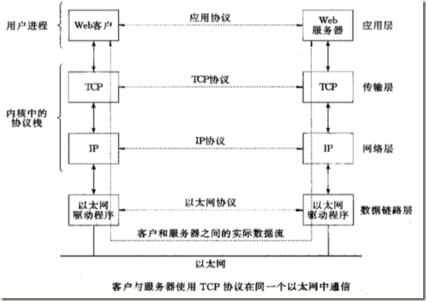
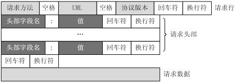

HTTP简介
网络协议
网络协议为计算机网络中进行数据交换而建立的规则、标准或约定的集合。
网络协议栈

整个通信网络的任务，可以划分成不同的功能块，即抽象成所谓的 ” 层”。其中每一层的协议都为其上层协议服务。或者说，上层协议是基于下层协议实现的。
简单来说：
*物理层讨论连接线路的物理特征，比如确定采用什么样的介质，用什么样的连接头。
*数据链路层决定在不同介质下信号的传递频率，确定了信号能从导线这头传递到导线那头。
*网络层确定了数据包从一个端传递到另一个端(ip地址或mac地址)。
*传输层确定了两个端口之间建立稳定的连接。
*应用层对应用程序之间的通讯服务，能让应用程序传递各种各样不同的文件。
Http
Hyper Text Transfer Protocol（超文本传输协议）是一个基于TCP/IP通信协议来传递数据（HTML 文件, 图片文件, 查询结果等），属于应用层的面向对象的协议。
它能确保数据在传输的过程中不被破坏，所以开发者可以专注应用程序特有细节的编写，而不用考虑因特网中存在的缺陷和问题
特点
1、简单快速：客户向服务器请求服务时，只需传送请求方法和路径。请求方法常用的有GET、HEAD、POST。每种方法规定了客户与服务器联系的类型不同。由于HTTP协议简单，使得HTTP服务器的程序规模小，因而通信速度很快。
2、灵活：HTTP允许传输任意类型的数据对象。正在传输的类型由Content-Type加以标记。
3.无连接：无连接的含义是限制每次连接只处理一个请求。服务器处理完客户的请求，并收到客户的应答后，即断开连接。采用这种方式可以节省传输时间。
4.无状态：HTTP协议是无状态协议。无状态是指协议对于事务处理没有记忆能力。缺少状态意味着如果后续处理需要前面的信息，则它必须重传，这样可能导致每次连接传送的数据量增大。另一方面，在服务器不需要先前信息时它的应答就较快。
5、支持B/S及C/S模式。
统一资源标识符
URI
统一资源标识符(Uniform Resource Identifier, URI)给每一个信息资源唯一标识。Http协议可以通过URI寻找到该资源。
Web上可用的每种资源如HTML文档、图像、视频片段、程序等都是一个来URI来定位的
URI一般由三部组成：
①访问资源的命名机制
②存放资源的主机名
③资源自身的名称，由路径表示，着重强调于资源。
URL
统一资源定位符(URL)是URI的一种，并且是最常见的URI，比如:
https://baike.baidu.com/item/tcp%2Fip
由三个部分组成
①协议(或称为服务方式)
②存有该资源的主机IP地址(有时也包括端口号)
③主机资源的具体地址。如目录和文件名等
URN
统一资源名(URN)作为特定内容的唯一名称使用，与资源所在地无关。比如因特网标准文档RFC 2141 无论在哪无论复制多少次，都可以用这个URN命名:
urn:ietf:rfc:2141
请求与响应

请求Request
客户端发送一个HTTP请求到服务器的请求消息包括以下格式：
请求行（request line）、请求头部（header）、空行和请求数据四个部分组成。

*请求行以一个方法符号开头，以空格分开，后面跟着请求的URI和协议的版本。
Get请求例子，使用Charles抓取的request：
1 | GET /562f25980001b1b106000338.jpg HTTP/1.1 |
第一部分：请求行，用来说明请求类型,要访问的资源以及所使用的HTTP版本.
GET说明请求类型为GET,[/562f25980001b1b106000338.jpg]为要访问的资源，该行的最后一部分说明使用的是HTTP1.1版本。
第二部分：请求头部，紧接着请求行（即第一行）之后的部分，用来说明服务器要使用的附加信息
从第二行起为请求头部，HOST将指出请求的目的地.User-Agent,服务器端和客户端脚本都能访问它,它是浏览器类型检测逻辑的重要基础.该信息由你的浏览器来定义,并且在每个请求中自动发送等等
第三部分：空行，请求头部后面的空行是必须的
即使第四部分的请求数据为空，也必须有空行。
第四部分：请求数据也叫主体，可以添加任意的其他数据。
这个例子的请求数据为空。
POST请求例子，使用Charles抓取的request：
1 | POST / HTTP1.1 |
第一部分：请求行，第一行明了是post请求，以及http1.1版本。
第二部分：请求头部，第二行至第六行。
第三部分：空行，第七行的空行。
第四部分：请求数据，第八行。
响应 Respense
一般情况下，服务器接收并处理客户端发过来的请求后会返回一个HTTP的响应消息。
HTTP响应也由四个部分组成，分别是：状态行、消息报头、空行和响应正文。
例:1
2
3
4
5
6
7
8
9
10HTTP/1.1 200 OK
Date: Fri, 22 May 2009 06:07:21 GMT
Content-Type: text/html; charset=UTF-8
<html>
<head></head>
<body>
<!--body goes here-->
</body>
</html>
第一部分：状态行，由HTTP协议版本号， 状态码， 状态消息 三部分组成。
第一行为状态行，（HTTP/1.1）表明HTTP版本为1.1版本，状态码为200，状态消息为（ok）
第二部分：消息报头，用来说明客户端要使用的一些附加信息
第二行和第三行为消息报头，
Date:生成响应的日期和时间；Content-Type:指定了MIME类型的HTML(text/html),编码类型是UTF-8
第三部分：空行，消息报头后面的空行是必须的
第四部分：响应正文，服务器返回给客户端的文本信息。
空行后面的html部分为响应正文。
HTTP请求方法
根据HTTP标准，HTTP请求可以使用多种请求方法。
HTTP1.0定义了三种请求方法： GET, POST 和 HEAD方法。
HTTP1.1新增了五种请求方法：OPTIONS, PUT, DELETE, TRACE 和 CONNECT 方法。1
2
3
4
5
6
7
8GET 请求指定的页面信息，并返回实体主体。
HEAD 类似于get请求，只不过返回的响应中没有具体的内容，用于获取报头
POST 向指定资源提交数据进行处理请求（例如提交表单或者上传文件）。数据被包含在请求体中。POST请求可能会导致新的资源的建立和/或已有资源的修改。
PUT 从客户端向服务器传送的数据取代指定的文档的内容。
DELETE 请求服务器删除指定的页面。
CONNECT HTTP/1.1协议中预留给能够将连接改为管道方式的代理服务器。
OPTIONS 允许客户端查看服务器的性能。
TRACE 回显服务器收到的请求，主要用于测试或诊断。
Http状态码
状态代码有三位数字组成，第一个数字定义了响应的类别，共分五种类别:
1xx：指示信息–表示请求已接收，继续处理
2xx：成功–表示请求已被成功接收、理解、接受
3xx：重定向–要完成请求必须进行更进一步的操作
4xx：客户端错误–请求有语法错误或请求无法实现
5xx：服务器端错误–服务器未能实现合法的请求
常见状态码：
1 | 200 OK //客户端请求成功 |
浏览器工作原理

HTTP协议定义Web客户端如何从Web服务器请求Web页面，以及服务器如何把Web页面传送给客户端。HTTP协议采用了请求/响应模型。客户端向服务器发送一个请求报文，请求报文包含请求的方法、URL、协议版本、请求头部和请求数据。服务器以一个状态行作为响应，响应的内容包括协议的版本、成功或者错误代码、服务器信息、响应头部和响应数据。
以下是 HTTP 请求/响应的步骤：
1、客户端连接到Web服务器
一个HTTP客户端，通常是浏览器，与Web服务器的HTTP端口（默认为80）建立一个TCP套接字连接。例如，http://www.oakcms.cn。
2、发送HTTP请求
通过TCP套接字，客户端向Web服务器发送一个文本的请求报文，一个请求报文由请求行、请求头部、空行和请求数据4部分组成。
3、服务器接受请求并返回HTTP响应
Web服务器解析请求，定位请求资源。服务器将资源复本写到TCP套接字，由客户端读取。一个响应由状态行、响应头部、空行和响应数据4部分组成。
4、释放连接TCP连接
若connection 模式为close，则服务器主动关闭TCP连接，客户端被动关闭连接，释放TCP连接;若connection 模式为keepalive，则该连接会保持一段时间，在该时间内可以继续接收请求;
5、客户端浏览器解析HTML内容
客户端浏览器首先解析状态行，查看表明请求是否成功的状态代码。然后解析每一个响应头，响应头告知以下为若干字节的HTML文档和文档的字符集。客户端浏览器读取响应数据HTML，根据HTML的语法对其进行格式化，并在浏览器窗口中显示。
例如：在浏览器地址栏键入URL，按下回车之后会经历以下流程：
1、浏览器向 DNS 服务器请求解析该 URL 中的域名所对应的 IP 地址;
2、解析出 IP 地址后，根据该 IP 地址和默认端口 80，和服务器建立TCP连接;
3、浏览器发出读取文件(URL 中域名后面部分对应的文件)的HTTP 请求，该请求报文作为 TCP 三次握手的第三个报文的数据发送给服务器;
4、服务器对浏览器请求作出响应，并把对应的 html 文本发送给浏览器;
5、释放 TCP连接;
6、浏览器将该 html 文本并显示内容;
POST请求和GET请求的区别
1.GET提交的数据会放在URL之后，以?分割URL和传输数据，参数之间以&相连，如EditPosts.aspx?name=test1&id=123456. POST方法是把提交的数据放在HTTP包的Body中.
2.GET提交的数据大小有限制（因为浏览器对URL的长度有限制），而POST方法提交的数据没有限制.
3.GET方式提交数据，会带来安全问题，比如一个登录页面，通过GET方式提交数据时，用户名和密码将出现在URL上，如果页面可以被缓存或者其他人可以访问这台机器，就可以从历史记录获得该用户的账号和密码.